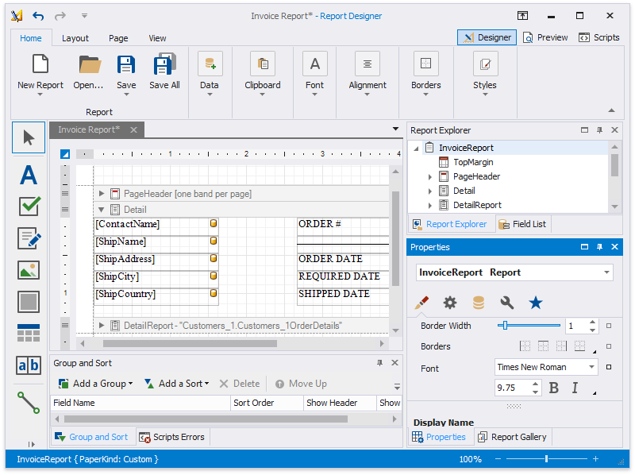

Report Designer for WinForms
The Report Designer allows you to create data-bound reports and provides a rich set of tools to construct report layouts that meet your requirements.

- First Look at the Report Designer
- Add New Reports
- Open Reports
- Save Reports
- Introduction to Banded Reports
- Bind to Data
- Create Reports
- Configure Design Settings
- Use Report Elements
- Use Report Parameters
- Shape Report Data
- Lay out Dynamic Report Content
- Customize Appearance
- Add Navigation
- Provide Interactivity
- Add Extra Information
- Use Expressions
- Use Report Scripts
- Localize Reports
- Report Designer Tools
- Preview, Print and Export Reports
Note
Specific features described in this guide may differ from what you see in your application. This depends on your application vendor.